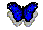

Разработчик имеет 20 ненумерованных проводов, к которым надо подключить универсальный мозг.
Требования к искусственному мозгу
(Техническое задание)
Попробуем сформулировать технические требования к мозгу для самообучающегося существа. В конце заметки есть ссылка на работающую программу, показывающую возможность выполнения этих требований.
О сознании можно судить только по поведению, а поведение можно имитировать. Поэтому у нас нет объективных свидетельств сознания. Мы не можем выполнить тест, доказывающий, что некая вещь обладает сознанием. Приходится использовать менее убедительные субъективные доводы.
Каждый из нас уверен, что лично он обладает сознанием. Из этого факта мы делаем менее надёжный, но с научной точки зрения очень надёжный вывод, что люди разумны, "потому что они похожи на меня". Дальнейшие умозаключения делят людей на 3 группы.
- Кто-то считает, что наиболее развитые обезьяны и дельфины имеют сознание, а кошки и мышки - нет.
- Кто-то верит в сознание кошки, но не червяка.
- Есть даже отдельные энтузиасты, которые допускают, что камни и трава тоже чувствуют что-то своё.
Все эти мнения являются экстраполяциями из двух надёжных аксиом:
- Я обладаю сознанием
- Я похож на другие вещи
Допустим, искусственный разум уже создан. И мы сделали кибер-кота, который ведёт себя как настоящий кот. Я думаю, что эксперты из группы 1 не смогут поверить, что этот кот обладает сознанием, а эксперты из группы 3 очень легко признают кота разумным.
Те же эксперты могут сформулировать согласованное мнение. При помощи экспертной оценки , выполненной специалистами в области сознания и в области поведения животных, мы можем распределить всех животных от гидры до человека по шкале разумности . Ясно, что потребуется много предварительной работы для накопления статистики. Нужно выявить опорные существа, о которых будет получено наиболее согласованное мнение разных экспертов, в различных классах: интеллект, сознание, разум, чувствительность, изобретательность и т.д. Затем эксперты дадут оценку кибер-коту, и он окажется где-то на этой шкале, получив свою долю нашей веры в его способность любить, страдать, хитрить.
Итак, различие животных по уровню развития сознания и ума является научным фактом. Таким же объективным фактом является зависимость уровня сознания от величины мозга. По этому параметру люди, дельфины и обезьяны находятся в первых рядах. Кто-то, вроде улитки, замыкает список. А бактерии вообще не имеют мозга.
Задачу создания кибер-кота можно разделить на две части: создание тела и создание мозга. Начнём с мозга, чтобы выполнить ещё один мысленный эксперимент. Допустим, мы сделали маленький, но надёжный, искусственный мозг. И заменили живой мозг живого кота на этот протез .
Сначала бедному коту придётся нелегко. Всему придётся учиться заново, так как в его новом мозгу ещё нет опыта взаимодействия с реальным телом кота. Но мы сделали мозг хорошо, и довольно скоро кот восстановит свои физические навыки, и продолжит свою интересную жизнь в общении с другими лабораторными котами.
А кого только нет в этой лаборатории по разработке кибер-котов! Итак, после необходимой реабилитации, обучения в играх и привыкания друг к другу коты занялись своими кошачьими делами. Мы видим, что настоящий кот, живой кот с кибер-мозгом, и кибер-кот из синтетических материалов признали друг друга. Они играют или дерутся как уличные коты, не спрашивая, кто какой национальности.
Один из выводов, который следует из этого выдуманного опыта, состоит в том, что сознание и осознавание себя возникают не в мозгу. Они возникают у тела, снабжённого мозгом, в то время когда это существо наблюдает себя и своё поведение в заинтересованном взаимодействии с реальным миром.
Искусственный разум тоже не сводится к искусственному мозгу. Разум развивается вместе с поведением в процессе обучения и приобретения выработанных ранее культурных (интеллектуальных) традиций. А мы судим о развитии сознания, сравнивая поведение данного существа с поведением других менее и более смышленых животных.
Сейчас уже возможно снабдить робота органами чувств, которые более чувствительны и имеют больший динамический диапазон, чем органы человека. Но универсальный мозг для обслуживания любых органов чувств пока не изобрели. Универсальный мозг не настроен на специфические физические особенности органов. Он взаимодействует с разными органами при помощи совершенно одинаковых нервных каналов связи.
Искусственный мозг нашего живого кота подключен к нервным окончаниям, приходящим от разных органов. Как он может понять и различить смысл разных нервных импульсов?
Живой мозг находится в таком же положении. Нервные импульсы от разных органов принципиально ничем не отличаются. Я не буду сейчас говорить о специализации различных участков мозга. Эта специализация является результатом того, что к различным участкам подходят нервные волокна от разных органов, и не умаляет универсальность мозга как изолированной от физического взаимодействия с миром информационной машины.
Раз уж мозг не имеет физической связи с миром, то ему всё равно, какое тело обслуживать. Мы могли бы использовать тот же самый искусственный мозг для вживления в голову собаки, а не кота. И, следовательно, задача создания искусственного мозга может быть решена независимо от создания органов чувств.
Для ускорения разработки универсального мозга можно устроить соревнование среди программистов. Жюри соревнования, состоящее из специалистов по роботостроению и поведению животных, разрабатывает искусственного кота с минимальным количеством управляющих каналов, которые, тем не менее, должны обеспечить полноценное поведение этого существа при соответствующем управлении.
Допустим, этот кот имеет 10 входов для управления различными системами, и 10 выходов от органов чувств и от датчиков, контролирующих исполнительные механизмы. Сигналы, которые нужно подавать и принимать от этих каналов, имеют всего 2 значения. Пример приведён в таблице.
| Смысл каналов | Слух | Движение | Питание |
|---|---|---|---|
| Величина сигнала | Канал No 1 | Канал No 2 | Канал No 3 |
| 0 вольт | шум слева сильнее | увеличить скорость | батарея заряжена |
| 1 вольт | шум справа сильнее | уменьшить скорость | требуется зарядка |
Важное требование универсальности состоит в том, что разработчик мозга не знает, какой канал за что отвечает. А разработчики кибер-кота могут изменять его конструкцию, заменять и добавлять новые механизмы, не сообщая об этом разработчикам мозга.
Итак, разработчик мозга имеет 10+10, а в более сложном случае просто 20 ненумерованных проводов, к которым надо подключить универсальный мозг.
Каждому участнику соревнования выдаётся коробочка с 20 клеммами. Из этой коробочки происходит управление котом по радио. На арене несколько одинаковых котов. В креслах жюри - эксперты по поведению животных. Программисты подключают проводки, и коты оживают.
Конечно, не так просто научиться более-менее разумному поведению с нуля. До приглашения жюри можно дать котам время на самообучение. В итоге побеждает тот кот, который покажется жюри наиболее способным любить, страдать, хитрить .
Чем разумнее поведение, тем лучше искусственный мозг. Если эксперты будут вынуждены признать, что один из котов обладает сознанием, то мы будем рады признать, что искусственный разум создан.
Начнём разработку с упрощённой задачи-минимум. Она служит отборочным испытанием для программистов, собирающихся в дальнейшем создать универсальный мозг с большим числом информационных каналов.
Проблему создания адаптирующейся системы можно сформулировать так.
Задана целевая функция желание или потребность W(S). S(t) - данные, поставляемые органами чувств. Система вырабатывает действия E(t) по отношению к внешнему миру. Измерения датчиков S в какой-то степени, но далеко не однозначно, зависят от действий E. Требуется найти такие действия E(t), чтобы минимизировать среднее значение целевой функции W(S(t)).
При решении такой задачи можно было бы использовать знания о мире, но мы должны создать универсальный алгоритм адаптации.
Попробуем построить простейшую, но всё же универсальную в своём классе систему, демонстрирующую способность к самообучению.
Не будем вводить случайных, не обусловленных поведением E(t), влияний мира на S(t). Пусть всё будет строго закономерно.
Пусть W==S(t) - это поток чисел.
W=0 означает, что потребность удовлетворена,
W=1 - не удовлетворена.
Значение числа W имеет предопределённый смысл для системы. Можно интерпретировать его как безусловную, жизненно необходимую или мотивирующую потребность.
Действие системы E(t) тоже представляет собой поток чисел. Будем интерпретировать это действие, как перемещение точки по окружности.
E=0 - перемещение на расстояние dx по часовой стрелке,
E=1 - перемещение на dx против часовой стрелки.
Перемещающаяся точка - это и есть наше искусственное существо, а окружность - это геометрия мира, в котором оно живёт.
В одной из точек окружности, например, там где у часов находится цифра 12, размещён стимул . Наше существо имеет только одно "чувство" W=S(t).
W=S=0 при совпадении координаты существа с координатой стимула,
и
W=S=1 если эти координаты не совпадают.
Требуется построить алгоритм поиска оптимального поведения E(t), обеспечивающего минимальное среднее значение W(t).
Важно учесть следующее ограничение:
Алгоритм поиска поведения, а также алгоритмы работы датчиков S и E не должны использовать сведений о том, что E(t) имеет смысл перемещения по окружности. Координаты точки и стимула, значение dx, направление перемещения не должны быть доступны этим алгоритмам. Действия E(t) должны зависеть только от S(t) и W(t), то есть, от данных доступных мозгу.
В терминах объектной независимости это означает, что система содержит
- Мозг , получающий поток данных s(t) и w(t) и вырабатывающий поток команд e(t). Только мозг занимается поиском оптимального поведения e(t).
- Орган чувств S, вырабатывающий сигнал s(t), равный 0 или 1 в зависимости от наличия или отсутствия контакта со стимулом.
- Датчик желания W, вырабатывающий сигнал w(t) в зависимости от значения s(t).
- Орган действия E, получающий от мозга сигнал e(t) и вырабатывающий направление движения E(t) по отношению к миру.
- Внешний мир , перемещающий точку вдоль окружности в зависимости от сигнала E(t). Кроме того, внешний мир сообщает органу S о наличии контакта точки со стимулом.
Если вам не до конца ясна задача изолированности указанных объектов, то представьте себе, что блок внешний мир и блок органы и датчики разрабатывает жюри. Вы не знаете об устройстве этих объектов и о том, как они используют сигналы мозга, который разрабатываете вы.
Правильное поведение нашего существа, которое оно должно изобрести самостоятельно, заключается в суетливых движениях влево-вправо около стимула.
Желаю удачной охоты!

Программа:
tmpbrain-2003-09.zip
(200kb)
Код:
synt-2003-09.zip
(20kb)
С примером реализации "задачи-максимум" вы можете познакомиться в работающем проекте SYNT . Он содержит код программы, описывающей взаимодействие внешнего мира с телом кибер-существа, и этого тела с универсальным мозгом .
Обратите внимание, как в программе происходит регистрация органов.
Регистрация органа зрения:
Vision:= Brain.NewOrgan;
Регистрация органа движения:
Drive:= Brain.NewOrgan;
Никакой информации о новом органе мозгу не передаётся. Регистрируется факт наличия органа, а не его свойства. Мозг не различает сенсоры и эффекторы. Ему не сообщается характер использования органов.
Обратите внимание, как применяются "команды", выработанные мозгом.
- X:=Drive.Data;
- используем X
Результаты измерений, выполненные как сенсорами, так и эффекторами передаются мозгу через ту же точку входа Data .
- измерили X
- Smell.Data:=X;
Если мы используем целевую функцию, то её текущее значение X передаётся мозгу как одно из прочих измерений.
Brain.Pleasure.Data:= X;
Brain.Pleasure - это "внутренний" орган, который вам не требуется регистрировать.
Обратите внимание, насколько малоинформативный обмен происходит между мозгом и телом кибер-существа. Это всего сотня-другая чисел в секунду. Обычный компьютер вполне может управлять роботом по радио-каналу. "Тело" робота должно обеспечивать приём и возврат команд и физическое взаимодействие с внешним миром.
Вы можете попробовать изменить функции органов, создать новые простые существа, проверить способности этих существ к обучению в зависимости от конструкции их органов.
Если у вас получится новое интересное существо, постарайтесь оформить его в виде работающего компонента. При передаче другому лицу версий программы с вашими изменениями, пожалуйста, передавайте также исходный проект в неизменённом виде.
1999-11-16